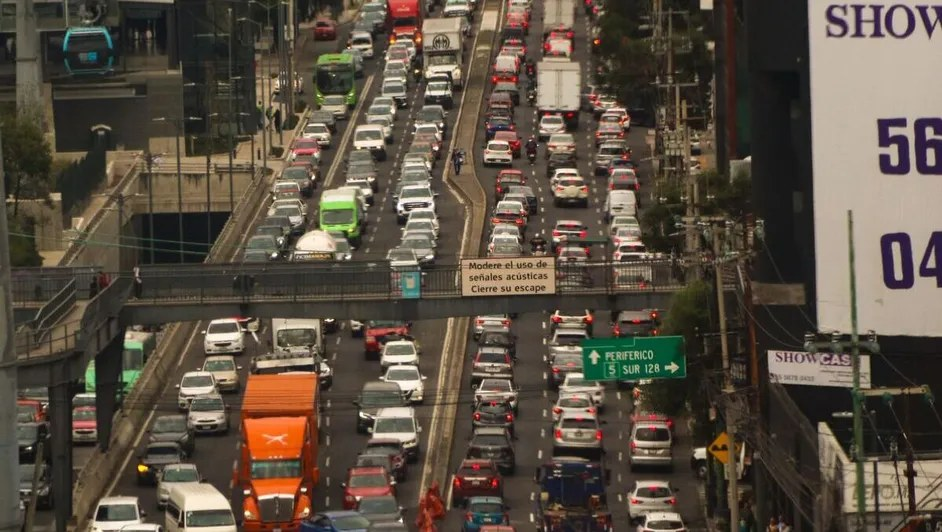

Imagen: Cuartoscuro
Entre noticias que reportan trayectos de seis horas, estadísticas que señalan que el Estado de México concentra el 40% de los robos en el transporte público y la cifra trágica de que una de cada tres muertes viales ocurre por atropellamiento, la movilidad en México se lee como una nota roja. No se trata de casos aislados, sino del reflejo cotidiano de lo que enfrentan más de 15 millones de personas que se desplazan entre distintas demarcaciones solo en el Valle de México, según el Inegi (2017).
México es reconocido por sus altos índices de violencia. La narrativa predominante pone el foco en la violencia criminal, económica y de género. Pero existe una violencia silenciosa que rara vez se aborda: la del desplazamiento. Esa donde las actividades cotidianas e imprescindibles, como el trabajo, los estudios o la salud, perpetúan la precariedad, la marginación y un estado crónico de estrés.
Pensadores como Iván Illich (1973) han documentado cómo el diseño urbano y el sistema económico roban tiempo a las clases trabajadoras al convertir la movilidad en un sistema de control. Les arrebatan horas de descanso, tiempo en comunidad y desarrollo personal. En el Valle de México, este fenómeno se refleja en cifras alarmantes: la población pierde en promedio 2.5 millones de horas diarias en sus traslados, según estudios del ingeniero de transportes Víctor Islas (2000).
La pérdida de tiempo no siempre es el principal problema. Los trayectos largos suelen agravarse por la inseguridad, manifestada en asaltos y acoso, así como por un entorno que violenta e invisibiliza al peatón. Esto convierte el desplazamiento en una necesidad riesgosa, en un espacio público dominado por automóviles y motocicletas particulares.
Esta hostilidad nace de una estructura arraigada. La abogada Carla Escoffié (2024) señala que existe una narrativa clasista que normaliza la incomodidad: la idea de que “el pobre puede perder el tiempo”. Bajo esta lógica, el auto se impone como única salida digna, reforzando una motorización individual que segrega y perpetúa la inacción política, que debería encargarse de mejorar las condiciones de quienes se desplazan a pie o en transporte público, alejando la movilidad del enfoque colectivo y convirtiéndola en una fuente de desigualdad.
Reconocer la movilidad como un pilar de la paz social es, hoy en día, un acto de resistencia. Exigir políticas públicas diseñadas para todos y no para unos cuantos es la única vía para devolverle la dignidad al tiempo y reconstruir el sentido de comunidad en una ciudad que expulsa a quienes la sostienen.
CIPMEX · Centro de Investigación para la Paz México, A.C. · Paz que se piensa, paz que se construye